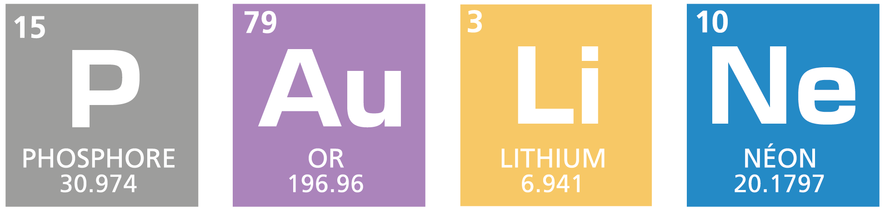

À propos de ce projet
Quand j'étais en 5e, j'ai découvert la chimie et le tableau périodique des éléments . Je me suis rendue
compte que mon nom, Pauline, pouvait être écrit avec des symboles d'éléments chimiques :

Mais cela n'est pas le cas de tous les prénoms. Plus tard dans mes études, j'ai appris differents
langages de programation (html, css, js), et j'ai eu l'idée d'associer chaque prénom, chaque personne,
avec un élément du tableau périodique.
Quand vous entrez un prénom, chaque lettre est assignée au nombre qui correspond à sa position dans
l'alphabet (A = 1, B = 2, etc). Un programme JavaScript calcule ensuite la somme des lettres de votre
prénom, et vous donne l'élément du tableau périodique qui a le même numéro atomique .